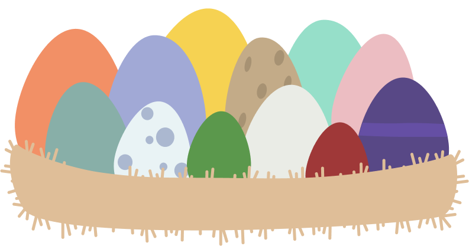

How this works!
Find out what bird you are most alike based on your birthday!
Input your birthday and hit submit to find out!
Or click on the various eggs to see the different birds!
Owl
"These animals are quite formidable and have vision and hearing unmatched within the animal kingdom."
Generally tending to stay quiet and thoughtful in a conversation, people born under Owls are observant and miss few details. These people are also known to speak sparsely yet profoundly. They are known to be extremely intelligent and understanding.
a-z-animals.com
Parrot
"Parrots are wonderfully intelligent and there are over 350 types of them around the world."
People born under Parrots have an excitement for life. They tend to see the magic in the world and have an extremely playful outlook on life. Though they tend to be goofballs, people born under the Parrot are extremely intelligent. You may also be inclined to social interactions and fun adventures.
a-z-animals.com
Robin
"The American robin is a migratory songbird. They are quite industrious. They roost in trees and eat berries in large flocks during the fall and winter."
People born under robins are incredibly loyal and hard working. They are incredibly strong and trustworthy, and place their trust in people sparingly.
a-z-animals.com
Wilsons
Warbler
"Wilson's Warbler is a small warbler known for its songs and the black cap on its head. They migrate all around the United States."
Those born under Wilson's Warbler are extremely kind and generous. They love being a part of communities and hold high importance in their family relations.
a-z-animals.com
Nightingale
"Nightingale's have a rich and powerful song that they sing at night."
Those who are under the Nightingale are extremely empathetic. You naturally connect to those around you and bring kindness to every situation. They also carry an intense sense of dignity in all of their interactions.
a-z-animals.com
Dove
"The dove is known for many things such as its distinct “coo” sound. They also have expert navigation abilities- you could call them the GPS of the bird kingdom!"
The dove is often considered a symbol of hope. People born under the dove prioritize balance, love, and peace within themselves and in their surrounding environment. They tend to like calm environments that aren't fast paced. They have an innate desire to be helpful and provide for their loved ones.
a-z-animals.com
Eagle
"One of the world's largest raptors, eagles can fly to over 10,000 feet. People born in this time frame soar high like the eagle."
Those who are born under the Eagles time, are generally outspoken confident people. They have an extreme sense of self assurance and will have no problem telling you how they feel. Often times Eagles are the ones to take initiative and follow through with their plans
a-z-animals.com
Kingfisher
"The Kingfisher is loud, brash, and hunts using its claws and bill."
Kingfishers are not ones to hold back, when they think something you will know. They are also more emotionally closed off and harder to get close too. However, once you befriend a Kingfisher you will have their loyalty until the end.
a-z-animals.com
Hawk
"There are many species of hawks, all having incredible eyesight. They are incredibly agile in flight and generally mate for life."
Those born under a Hawk have an incredible intuition about situations and people. They are incredibly adaptable to the various challenges they may face. Though Hawks value their independence they also are fierecly protective of those they allow close to them.
a-z-animals.com
Swan
"Swans are waterfowls that swim gracefully and form lifelong bonded pairs at around two to three years of age."
Swans are graceful in personality and behavior. They navigate social situations and discourse with ease and are natural compromisers. They work hard to find solutions where everyone can be happy. Swans are gentle and kind to their core.
a-z-animals.com
Rooster
"Roosters have a strutting attitude to go with their feathers that are usually in brighter colors than their companion hens, but not in every breed."
Roosters put a lot of merit into their looks, presentation is everything to them. They are incredible performers and picky when it comes to their actions and the way they present themselves. Roosters are also extremely hard-working and tend to make strong leaders.
a-z-animals.com
Raven
"Ravens are extremely intelligent and will follow humans and eat their scraps for leftovers."
Ravens are fierce individuals that like to keep a tight circle of one to two others around them. They are confident and inquisitive about the world around them. They are fiercely devoted to their family and partners, even when it becomes quarrelsome- which is quite often.
a-z-animals.com